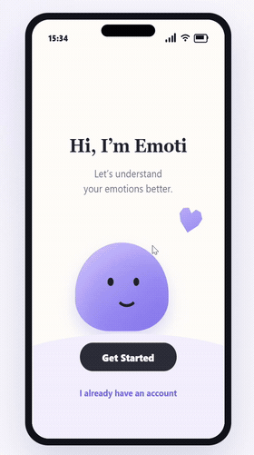
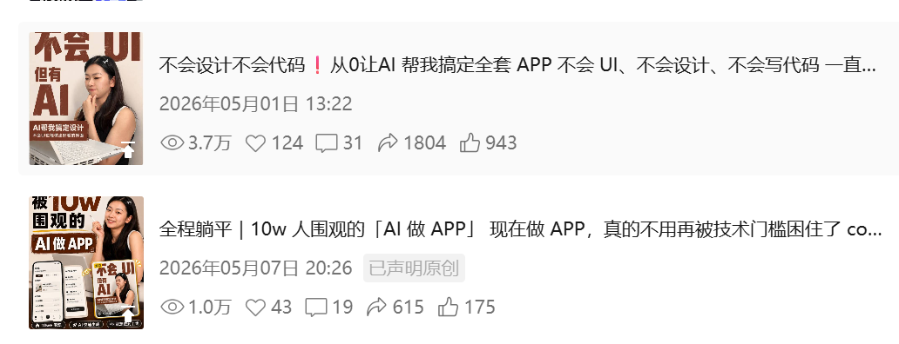

image2_UI_skill
为了解决“参考图 / 设计稿很难变成可执行界面”的问题，我设计并整理了这个 Codex Skill：把 UI 截图、设计稿、App 参考图转成可执行的网页或 App demo；保留交互文字、按钮和布局，复杂视觉资产再调用 image2。
项目 01 / AI UI 工作流
把参考图变成可点击 demo
先拆界面，再判断代码和 image2 资产边界，最后用可打开页面和动图验收。
- 目标
- 参考图 → 可点击 demo
- 负责
- 工作流 / 前端 / image2 规则
- 产出
- Codex Skill + 示例 demo
- 结果
- GitHub 82star / 内容 2w+ 播放

项目 01 / 传播验证
发布后有真实播放反馈
不是只展示概念图，而是把上线后的列表数据、置顶内容和社媒播放结果放在一起验证。
- 内容
- 全网 2w+ 播放
- 置顶
- 12.5w 播放展示
- 列表
- 3.7w / 1.0w 单条播放
- 仓库
- GitHub 82star
